“学院风”（preppy style）是一种着装风格，以美国“常春藤”名校校园着装为代表。由热衷运动、交际和度假的贵族预科生（preppy）引领的衬衫配毛背心或者V领毛衣的装扮在上世纪八十年代极为流行。
很多MM们跟我说她们想打造学院风格的服装，可以穿来穿去都觉得不对劲。那到底是哪里出了问题了呢。momo替大家解决一下。
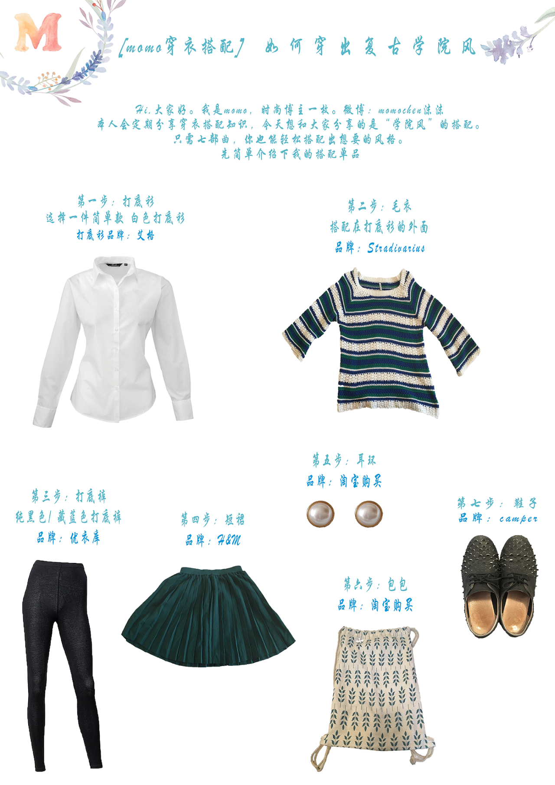更多展示～
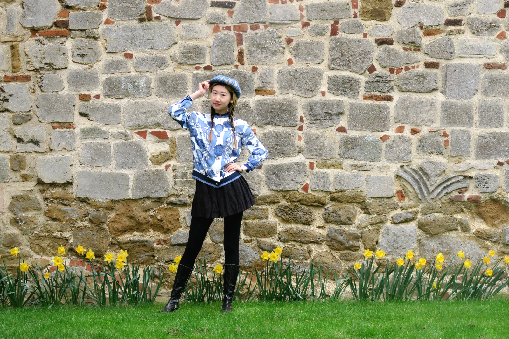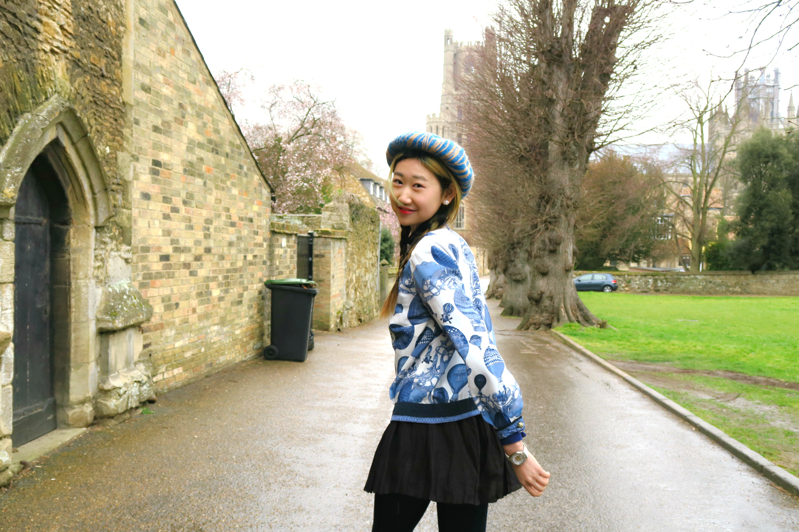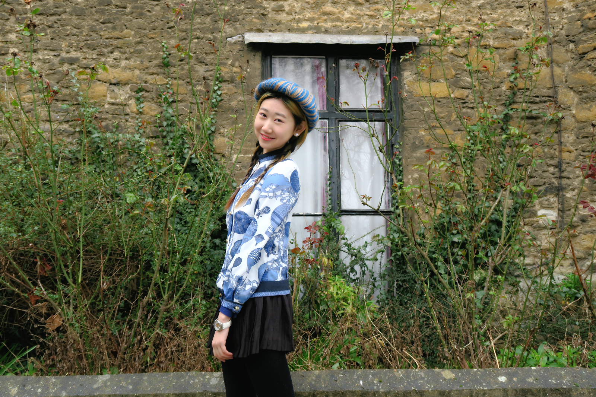上衣：一家复古商店 (位于伦敦的Brick Lane)
裙子 : BANI.Bbys
打底裤 : 优衣库Uniqlo
帽子 :一家复古商店 (位于伦敦的BrickLane)
️手表 :S-watch
鞋子 :Nelli
第二套
上衣 : YOURAN
裙子: H&M
打底裤: Uniqlo优衣库
耳环: 复古小店
(淘宝上有类似的款，直接搜珍珠耳环就可以啦)
️手表: S-watch
靴子: Nelli
下面来解释下，我为什么要这么穿？
服装选择：我选择了白色针织上衣，绿色短裙。白色打底裤，鞋子是中长款的靴子。搭配复古红唇妆容。凸显出复古以及学院派的感觉。
风格：以学院风格+英伦复古为主。
颜色：以绿色+白色为主色调。如果你在公园，郊游，背景大量以绿色为主，可以选择黄色，白色，绿色等暖色系来进行搭配。尽量避免选择黑色，大量印花，以及混搭的风格。
搭配技巧：
1.高领毛线衣会显得人更有气质
2.请把短裙搭配于上衣外面，不仅显腿长，而且提高腰线
3.打底裤是好帮手，尤其是秋冬怕冷的mm。如果不想在秋冬走美丽冻人路线。那么请必备打底裤（黑色/白色）
4.在穿好衣服之后，可以适当的加点饰品。但不要多，一般2样就够了。比如说：耳环+手表/ 项链+手镯
5.根据你要旅游的地点选择服装风格——像博主这次去的是剑桥大学，就搭配了学院风格的服装。如果你要去的是海边，这么搭配就很奇怪了。因此根据地点的不同，选择适当的服装。
下面就为大家揭开学院风的神秘面纱
裙子也分很多类，有mini短裙，大摆裙，长裙。虽然很多都可以展现出学院风，但博主最想推荐的就是迷你短裙。短裙处处都透漏着一股学生青春的气息，因此值得大力推荐！
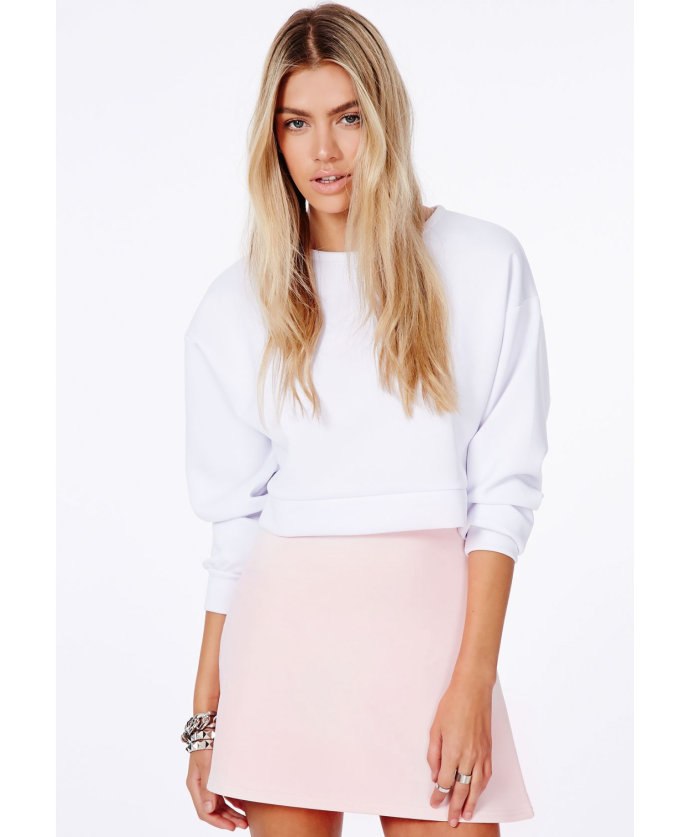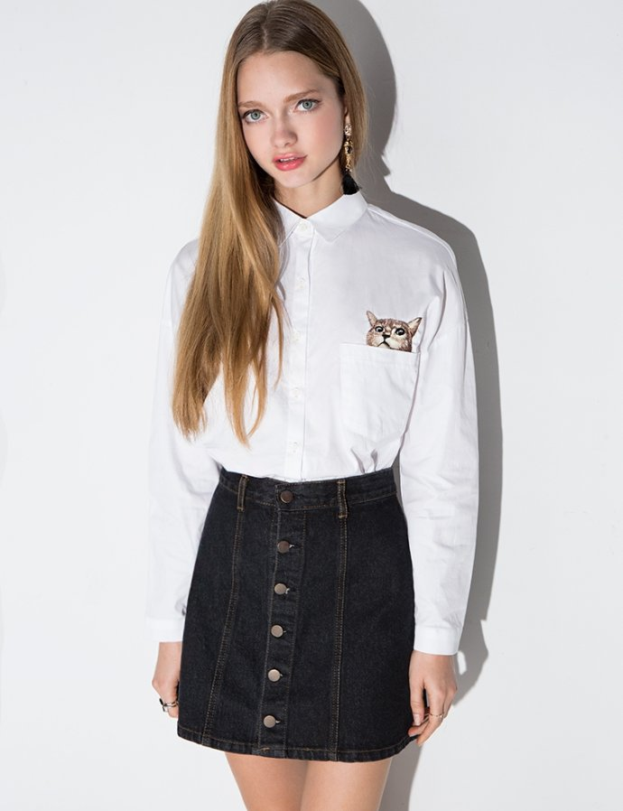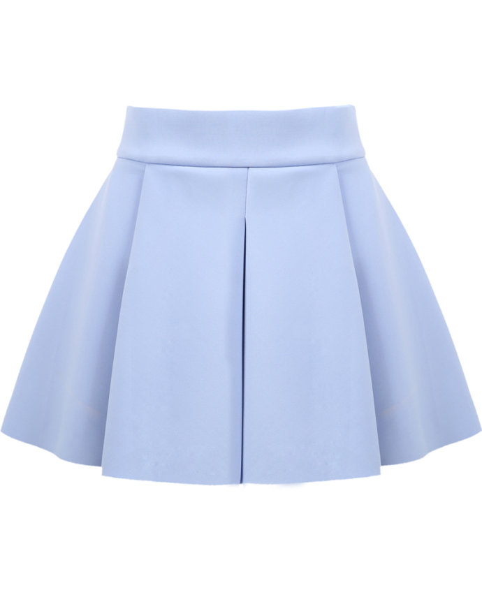在裙子的选择上，我建议大家选择纯色的裙子为主。牛仔短裙也可以，但尽量避免选择大片印花，或是有图案的裙子。搭配起来相对难一些。
如果你真的想选择有印花的裙子，那请记住，
上衣一定要是素色/纯色。
而且，要保证衣服上下有呼应感。色彩的对应，简单来说。裙子的色系和上衣的色系一致
比如：下面这套，上衣是深色——普兰色，下装是黑色。产生了相互对应
这套的裙子和鞋子形成了对应。看起来也是非常和谐的
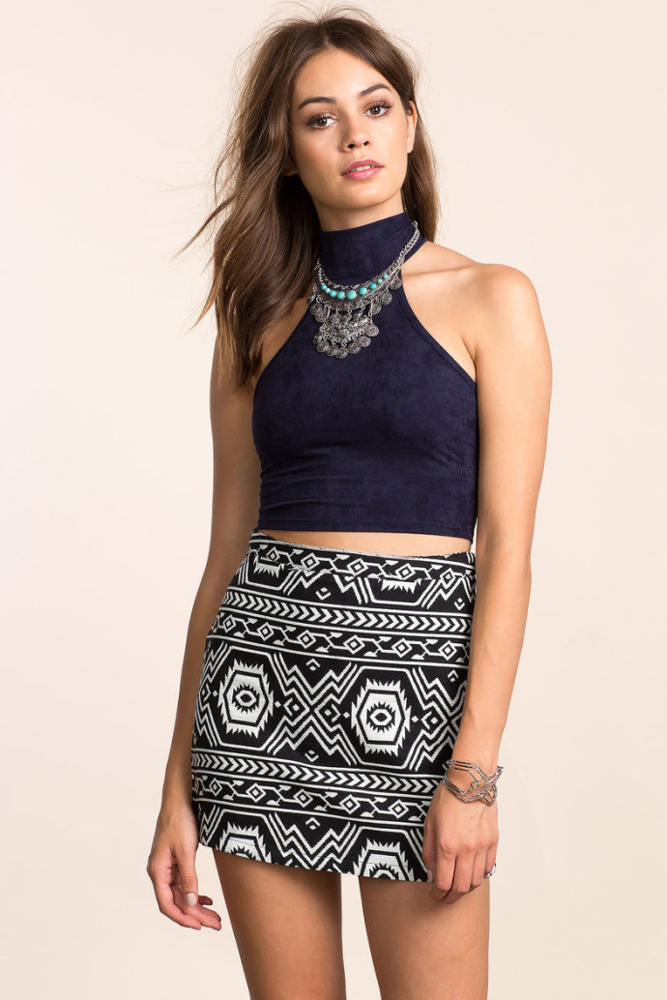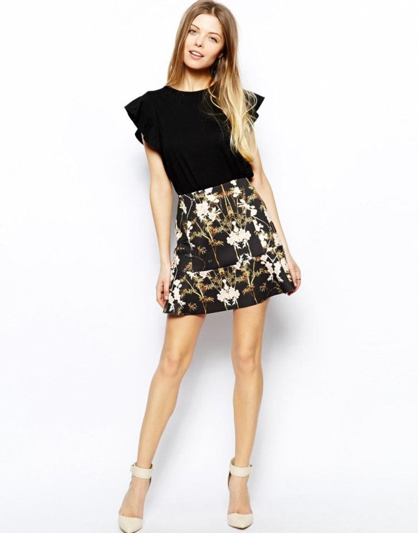
裙子和鞋子形成了对应。看起来也是非常和谐的
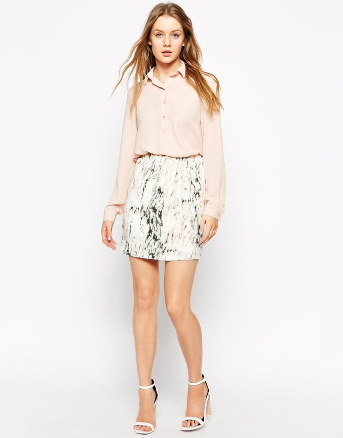
靴子可以很好的hold住整体造型。为造型加分。
如果你是小个子，我推荐穿带跟的靴子。可以拉长腿部线条
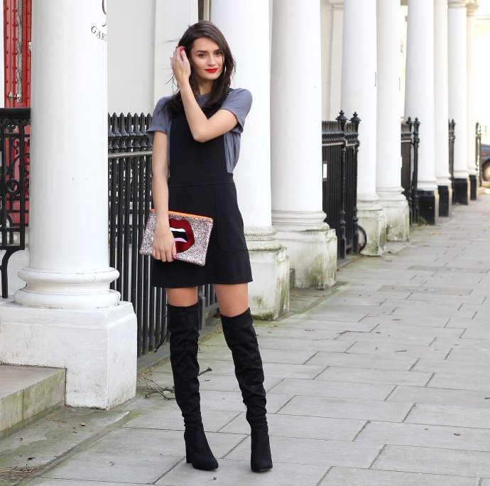秋冬季的话，毛衣也是不二的选择。即御寒又时尚。可是真的不推荐Taylor 的这种穿法。我们不做美丽冻人，秋冬季也可以穿得时尚又动人。
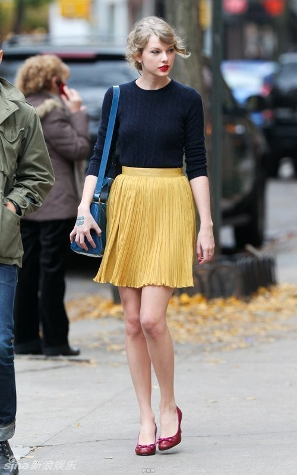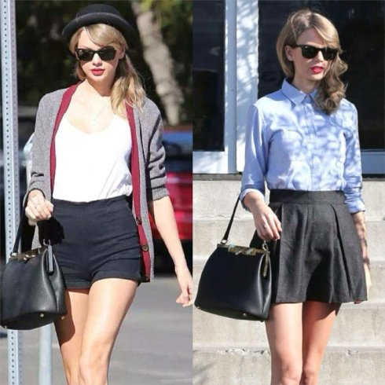大家一定疑惑，这是什么。。我来发两张图 大家来看看就知道了
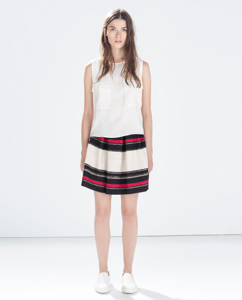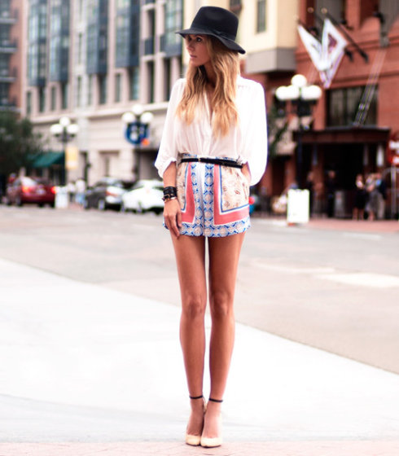秋冬搭配对很多mm来说很头疼，如何搭配出不冷又好看的学院风呢？所以，我觉得打底裤是必不可少的东西。可以选择有薄棉的打底裤。一般来说，我们会在打底裤的外面加上一条小裙子，来突出搭配的整体性。
当然在夏季，你也可以穿上打底裤。如果不想穿打底裤。博主推荐可以用长腿裤袜或者不穿裤袜
博主推荐大家购买白色/黑色的打底裤。因为白黑是主流颜色，无论搭配什么颜色的都能够轻松hold住当然色彩搭配是有讲究的，白色打底裤建议和暖色系服饰相搭配。黑色打底裤建议和暗色系服饰相搭配。
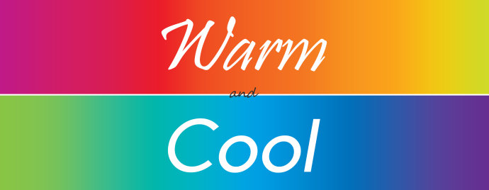另外，你可以通过帽子，饰品，妆容或者是发型来提升整体的搭配。
另外博主整理了
适合学院风的帽子：毛呢帽，小礼帽，贝蕾帽
适合学院风的发型：花苞头，双辫发型，马尾
适合学院风的饰品：手表️，小耳环，简单的项链，手镯
另外，博主编了个口诀。你也可以通过口诀记住，学院风的穿衣搭配：
mini短裙最适合
印花短裙需配色
靴子复古鞋子来帮忙
衬衫毛衣齐上阵
裙子外穿提腰线
秋冬穿上打底裤
感谢阅读，如果想了解更多穿衣搭配的内容，请关注我
微博：momochen沫沫
公众微信号：艺术前线（定期分享国外展览）
知乎：momochen
大家有学会吗？